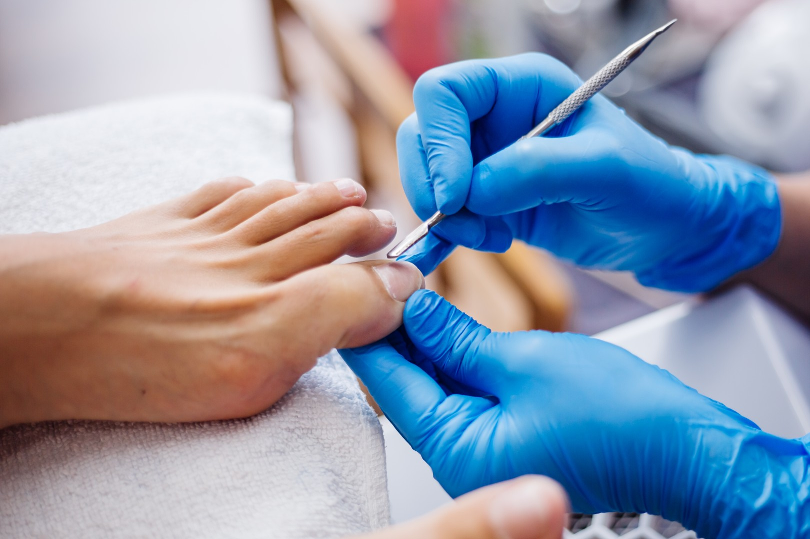
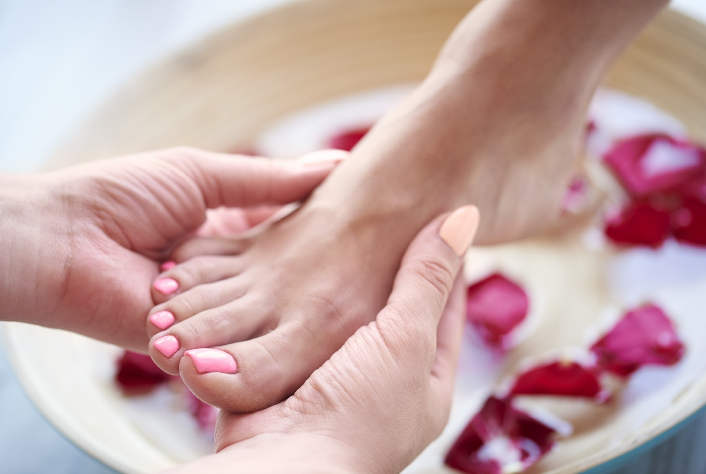
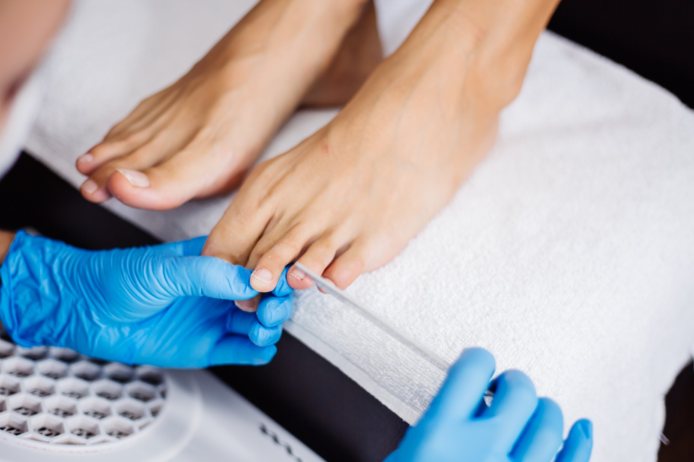

Basis Fußpflege - ab € 33,50
Entspanntes Fußbad, Haut- und Nagelpflege, Hornhautentfernung, Prüfen des
Nagelpfalzes, kleine Fußmassage - Dauer ca. 40 Minuten
Erweiterte Fußpflege - ab 38,50
Erweiterte Behandlung bei Problemfuß - Dauer bis zu 45 Minuten
Zusätzliche Optionen
Wohlfühlmassage / Fusszonenmassage 30 Euro - Dauer 25 min.
Fussenthaarung



Fusszeit am Bodensee - Esther Selig
Walter-Eberhard-Loch-Str. 10
88682 Salem
Telefon: 0155 60 590081
Whatsapp: 0155 60 590081
Termine nach Vereinbarung per Whatsapp und Telefon
Ich freue mich auf deinen Anruf !


Ich freue mich auf dich.
Deine Esther
Hier steht der Inhalt der zweiten Spalte.
Angaben gemäß § 5 DDG (Digitale-Dienste-Gesetz) und § 18 MStV (Medienstaatsvertrag):
Esther Selig
Walter-Eberhard-Loch-Str. 10
88682 Salem
Telefon: 0155 60 590081
Inhaberin: Esther Selig
Verantwortlich für den Inhalt nach § 18 Abs. 2 MStV:
Esther Selig, Walter-Eberhard-Loch-Straße 10, 88682 Salem-Neufrach